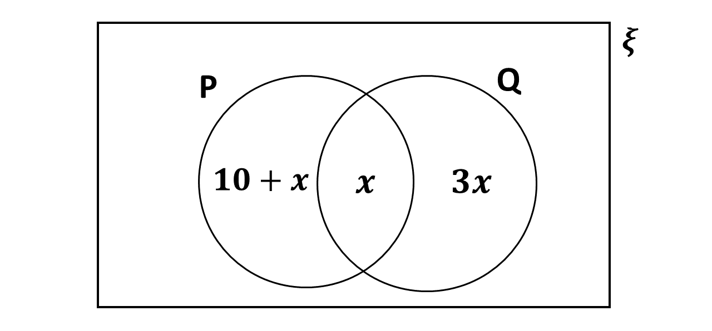

Question 1
In the Venn diagram, $n(P) = n(Q)$. Find the value of $x$.

$0$
$2$
$5$
$10$
Question 2
Which of the following operations is not commutative?
$a \otimes b = a + b - ab$
$a \otimes b = 2a + 2b - ab$
$a \otimes b = \dfrac{1}{a} + \dfrac{1}{b}$
$a \otimes b = a - b + ab$
Question 3
A function $f$ is defined by $f: x \rightarrow \dfrac{3x + 1}{2}$. Find
$f^{-1}(x)$
$\dfrac{2x - 1}{3}$
$\dfrac{2x + 1}{3}$
$\dfrac{2(x - 1)}{3}$
$\dfrac{x - 2}{3}$
Question 4
An exponential sequence is defined $30$, $15$, $7\frac{1}{2}$, $\dots$.
Find the sum to infinity of this sequence.
$15$
$30$
$45$
$60$
Question 5
Find the coefficient of $y^3$ in the binomial expansion of $(x - 2y)^4$.
$-32x$
$-4x$
$4x$
$32x$
Question 6
Find the derivative of the function $$ g:x \rightarrow x^2 - \dfrac{1}{x^3} $$
$2x - \dfrac{3}{x^4}$
$2x + \dfrac{3}{x^4}$
$2x - \dfrac{3}{x^2}$
$2x + \dfrac{3}{x^2}$
Question 7
If $(3 + 4\sqrt{3})(2 - a\sqrt{3}) = -18 + 2\sqrt{3}$, find the value
of $a$.
$-4$
$-2$
$2$
$3$
Question 8
$P(15^\circ E, 30^\circ N)$ and $Q(45^\circ W, 30^\circ N)$ are two towns
on the earth's surface. Find the distance between them along the parallel latitude
given that $R$ is the radius of the earth.
$\dfrac{\sqrt{3}}{3} \pi R$
$\dfrac{\pi R}{3} $
$\dfrac{\sqrt{3}}{6} \pi R$
$\dfrac{\pi R}{6}$
Question 9
Find the equation of the line which makes and angle of $135^\circ$ with the positive
$x$-axis and passes through the point $(0, 4)$.
$y + x + 4 = 0$
$y + x - 4 = 0$
$y - x + 4 = 0$
$y - x - 4 = 0$
Question 10
Given that $2 \log_y x = 3$, find the relation involving $x$ and $y$.
$y^3 = x^2$
$y^3 = x$
$y^2 = x^3$
$y = x^3$
Question 11
$M : (x, y) \rightarrow (-y, 2x + y)$ is a linear transformation in the $OXY$
plane. Find $M$.
$\begin{pmatrix} -1 & 0 \\ 1 & 2 \end{pmatrix}$
$\begin{pmatrix} -1 & 0 \\ 2 & 1 \end{pmatrix}$
$\begin{pmatrix} 0 & -1 \\ 1 & 2 \end{pmatrix}$
$\begin{pmatrix} 0 & -1 \\ 2 & 1 \end{pmatrix}$
Question 12
Given that $y = (2x^3 + 2x^2 + 1)^5$, find $\dfrac{dy}{dx}$.
$5(2x^2 + 4x)(2x^3 + 2x^2 + 1)^4$
$5(6x^2 + 4x)(2x^3 + 2x^2 + 1)^4$
$(x^2 + 4x)(2x^3 + 2x^2 + 1)^4$
$5(6x^2 + 2x)(2x^3 + 2x^2 + 1)^4$
A bag contains $8$ red and $4$ blue identical balls. Two of the balls are selected
at random one after the other without replacement.
Use the information to answer Questions 4 and 5.
Question 13
What is the probability that they are both red?
$\dfrac{14}{33}$
$\dfrac{9}{14}$
$\dfrac{1}{3}$
$\dfrac{2}{11}$
A bag contains $8$ red and $4$ blue identical balls. Two of the balls are selected
at random one after the other without replacement.
Use the information to answer Questions 13 and 14.
Question 14
If the first ball is found to be blue, what is the probability that the second
ball is red?
$\dfrac{8}{33}$
$\dfrac{4}{11}$
$\dfrac{4}{7}$
$\dfrac{8}{11}$
Question 15
If $A = \begin{pmatrix} 2 & 3 \\ 1 & 0 \end{pmatrix}$ and
$B = \begin{pmatrix} 0 & 2 \\ 1 & 1 \end{pmatrix}$ find $AB$.
$\begin{pmatrix} 3 & 7 \\ 1 & 2 \end{pmatrix}$
$\begin{pmatrix} 3 & 7 \\ 0 & 2 \end{pmatrix}$
$\begin{pmatrix} 3 & 7 \\ 2 & 2 \end{pmatrix}$
$\begin{pmatrix} 3 & 7 \\ 2 & 0 \end{pmatrix}$
Question 16
Given that $P = (7N, 060^\circ)$, express this is the form
$ai + bj$ where $a$ and $b$ are scalars.
$\dfrac{7}{2}i + \dfrac{7}{2}j$
$\dfrac{7}{2}i - \dfrac{7}{2}j$
$\dfrac{7}{2}\sqrt{3}i + \dfrac{7}{2}j$
$7\sqrt{3}i + 7j$
Question 17
For what values of $x$ will the function $f:x \rightarrow x^3 - 6x^2 + 5$ have a
turning point?
$0.4$
$0.2$
$-2$
$-4$
Question 18
The mean of $12$ numbers is $18$. If each of the numbers is increased by $4$,
what is the new mean?
$14$
$18$
$22$
$26$
Question 19
Evaluate $$ \int_1^3 (4x^2 - 6x + 1) dx $$
$54$
$56$
$57$
$58$
Question 20
Find the value of $x$ in the equation $$ 8^{2x + 1} = \dfrac{1}{512}$$
$-5$
$-2$
$-1$
$4$
Question 21
Find the equation of the line which passes through the point $(1, 3)$ and which is
perpendicular to the line $2y - 3x + 1 = 0$.
$2y + 3x - 9 = 0$
$2y - 3x - 9 = 0$
$3y + 2x - 11 = 0$
$2y + 3x - 3 = 0$
Question 22
If $\tan \theta = -\dfrac{3}{4}$, where $90^\circ \leq \theta \leq 180^\circ$,
find the value of $\cos (60^\circ - \theta)$.
$-\dfrac{2}{5} + \dfrac{3\sqrt{3}}{10}$
$-\dfrac{2}{5} - \dfrac{3\sqrt{3}}{10}$
$\dfrac{2}{5} - \dfrac{3\sqrt{3}}{10}$
$\dfrac{2}{5} + \dfrac{3\sqrt{3}}{10}$
Question 23
The second and fourth terms of a linear sequence are $9$ and $17$
respectively. Find the common difference.
$2$
$4$
$5$
$8$
Question 24
$V$ and $P$ are related by $V = aP^n$, where $a$ and $n$ are constants.
Find the gradient of the straight line obtained from it.
$\log a$
$\log n$
$a$
$n$
Question 25
Two smooth balls of masses $20$ g and $15$ g moving along with speed
$9$ ms$^{-1}$ and $4$ ms$^{-1}$ respectively collide. If they were moving
in the same direction and the speed of the first ball reduces to $6$ ms$^{-1}$,
find the speed of the second ball after collision.
$8$ ms$^{-1}$
$6$ ms$^{-1}$
$5$ ms$^{-1}$
$1$ ms$^{-1}$
Question 26
Two functions $f$ and $g$ are defined by $f:x \rightarrow x + 3$
and $g:x \rightarrow x^2 - 1$. Find $gof$.
$x^2 + 2$
$x^2 + 3$
$x^2 + 3x + 8$
$x^2 + 6x + 8$
Question 27
Which of the following matrices has no mulplicative inverse?
$\begin{pmatrix} 1 & 2 \\ 3 & 5 \end{pmatrix}$
$\begin{pmatrix} 3 & 4 \\ -1 & 7 \end{pmatrix}$
$\begin{pmatrix} 4 & -2 \\ -2 & 1 \end{pmatrix}$
$\begin{pmatrix} 5 & 2 \\ 1 & 2 \end{pmatrix}$
Question 28
A binary operation is defined by $a * b = a^2 - b^2 + ab$, where $a$ and $b$
are real numbers. Evaluate $\sqrt{2} * \sqrt{3}$.
$17$
$\sqrt{6} - 1$
$1 + \sqrt{6}$
$1 - \sqrt{6}$
Question 29
If $\alpha$ and $\beta$ are the roots of $4x^2 - 9x - 16 = 0$, which of the
following statements is/are correct?
$I$. $\alpha + \beta = \dfrac{9}{4}$
$II$. $\alpha \beta = -4$
$III$. $\alpha + \beta = -\dfrac{9}{4}$
$I$ only
$II$ only
$I$ and $II$ only
$II$ and $III$ only
Question 30
Given that $f:x \rightarrow x^4 - 3x^2 - 7x + 11$, find $f(-1)$.
$2$
$8$
$14$
$16$
Question 31
If $a = 3\mathbb{i} + 4\mathbb{j}$ and $b = 10\mathbb{i} - 2\mathbb{j}$,
find $b - 2a$.
$4\mathbb{i} - 10\mathbb{j}$
$6\mathbb{i} + 6\mathbb{j}$
$6\mathbb{i} - 2\mathbb{j}$
$6\mathbb{i} - 10\mathbb{j}$
Question 32
The probabilities that Joe and Sarah solve a problem correctly are $\dfrac{2}{3}$
and $\dfrac{1}{5}$ respectively. If they both attempt the problem, find the probability
that one of them solves it correctly.
$\dfrac{4}{5}$
$\dfrac{3}{5}$
$\dfrac{2}{5}$
$\dfrac{2}{15}$
Question 33
The equation of the line of best fit for two variables $X$ and $Y$, where $X$ is
the independent variable, is given by $Y = 4.2X - 0.3$. Predict the value of $Y$
when $X = 7.1$.
$30.12$
$29.82$
$29.52$
$29.10$
Question 34
Given that $A = \begin{pmatrix} 4 & 1 \\ 2 & 3 \end{pmatrix}$ and
$B = \begin{pmatrix} 1 & -2 \\ -1 & 4 \end{pmatrix}$, find $2A + 3B$.
$\begin{pmatrix} 11 & -4 \\ 1 & 18 \end{pmatrix}$
$\begin{pmatrix} 5 & -1 \\ 1 & 7 \end{pmatrix}$
$\begin{pmatrix} 10 & -2 \\ 2 & 4 \end{pmatrix}$
$\begin{pmatrix} 11 & -8 \\ 1 & 18 \end{pmatrix}$
Question 35
$\dfrac{5 - \sqrt{3}}{2 + \sqrt{3}}$ is expressed in the form $a + b\sqrt{3}$,
where $a$ and $b$ are real numbers. Find the value of $b$.
$10$
$7$
$-7$
$-10$
Question 36
The equation of a circle is given by $3x^2 + 6x + 3y^2 + 9y - 3 = 0$. Find
the coordinates of the centre.
$(-2, \frac{3}{2})$
$(-1, -\frac{3}{2})$
$(1, -\frac{3}{2})$
$(2, -3)$
The table below shows the distribution of marks of 20 students in a test.
\[
\begin{array}{|c|c|c|c|c|c|} \hline
\text{Marks} & 0 - 19 & 20 - 39 & 40 - 59 & 60 - 79 & 80 - 99 \\ \hline
\text{Freq.} & 2 & 6 & 8 & 3 & 1 \\ \hline
\end{array}
\]
Use it to answer questions 37, 38 and 39
Question 37
What is the lower class boundary of the median class?
$59.5$
$40.5$
$39.5$
$19.5$
The table below shows the distribution of marks of 20 students in a test.
\[
\begin{array}{|c|c|c|c|c|c|} \hline
\text{Marks} & 0 - 19 & 20 - 39 & 40 - 59 & 60 - 79 & 80 - 99 \\ \hline
\text{Freq.} & 2 & 6 & 8 & 3 & 1 \\ \hline
\end{array}
\]
Use it to answer questions 37, 38 and 39
Question 38
Find the mean.
$47.6$
$45.0$
$44.8$
$44.5$
The table below shows the distribution of marks of 20 students in a test.
\[
\begin{array}{|c|c|c|c|c|c|} \hline
\text{Marks} & 0 - 19 & 20 - 39 & 40 - 59 & 60 - 79 & 80 - 99 \\ \hline
\text{Freq.} & 2 & 6 & 8 & 3 & 1 \\ \hline
\end{array}
\]
Use it to answer questions 37, 38 and 39
Question 39
If a student is selected at random from the group, what is the probability that
he obtained at least $59.5$ marks?
$\dfrac{3}{20}$
$\dfrac{1}{5}$
$\dfrac{2}{5}$
$\dfrac{3}{5}$
Question 40
A particle starts from rest and moves in a straight line in such a way
that its velocity, $v$ ms$^{-1}$ at time $t$ seconds is given by
$v = 3t^2 - 6t$. Calculate the distance travelled in the first 4 seconds.
$12$ m
$16$ m
$64$ m
$96$ m
Question 41
A particle starts from rest and moves in a straight line in such a way
that its velocity, $v$ ms$^{-1}$ at $t$ seconds is given by
$v = 3t^2 - 6t$. Calculate the acceleretion in the third second.
$0$ ms$^{-2}$
$3$ ms$^{-2}$
$6$ ms$^{-2}$
$9$ ms$^{-2}$
Question 42
Find the angle between $i + 5j$ and $5i - j$.
$0^\circ$
$45^\circ$
$60^\circ$
$90^\circ$
Question 43
If $\overrightarrow{OA} = \begin{pmatrix} 4 \\ 3 \end{pmatrix}$ and
$\overrightarrow{OB} = \begin{pmatrix} 2 \\ 9 \end{pmatrix}$ and $N$ is the
midpoint of $\overrightarrow{AB}$, find $\overrightarrow{ON}$.
$\begin{pmatrix} 3 \\ 6 \end{pmatrix}$
$\begin{pmatrix} 2 \\ -6 \end{pmatrix}$
$\begin{pmatrix} 6 \\ 12 \end{pmatrix}$
$\begin{pmatrix} 8 \\ 27 \end{pmatrix}$
Question 44
Given that
$\begin{pmatrix} 1 & 0 \\ 2 & x \end{pmatrix} \begin{pmatrix} 3 & 2 \\ 0 & 1 \end{pmatrix} = \begin{pmatrix} 3 & 2 \\ 6 & 3 \end{pmatrix}$.
Find $x$.
$3$
$1$
$0$
$-1$
Question 45
Find the gradient of the tangent to the curve $y = x^3 - 2x + 1$ at the
point $(-1, 2)$.
$-1$
$1$
$5$
$10$
Question 46
If $\dfrac{3x + 4}{x^2 - 3x + 2} \equiv \dfrac{A}{(x - 1)} + \dfrac{B}{(x-2)}$,
find the value of $A + B$.
$-3$
$2$
$3$
$4$
Question 47
The gradient of a curve is given by $3x^2 + 2x$. Find the equation of the curve
if the point $(-2, 2)$ lies on the curve.
$y = 3x^3 + x^2 + 6$
$y = 3x^3 + x^2 - 2$
$y = x^3 + x^2 + 6$
$y = x^3 + x^2 - 6$
Question 48
$Q^\prime (3, 5)$ is the image of $Q$ under a linear transformation,
$T = \begin{pmatrix} 3 & 1 \\ 5 & 2 \end{pmatrix}$. Find the coordinates of
$Q$.
$(1, 0)$
$(0, 11)$
$(6, 5)$
$(14, 25)$
Question 49
A particle of mass $3$ kg has an initial velocity $u = \begin{pmatrix} -3 \\ 4 \end{pmatrix}$
ms$^{-1}$ and final velocity $v = \begin{pmatrix} 2 \\ 3 \end{pmatrix}$ ms$^{-1}$. Find the
change in momentum.
$\begin{pmatrix} -3 \\ -3 \end{pmatrix}$ Ns
$\begin{pmatrix} -3 \\ 21 \end{pmatrix}$ Ns
$\begin{pmatrix} 15 \\ -3 \end{pmatrix}$ Ns
$\begin{pmatrix} 15 \\ 3 \end{pmatrix}$ Ns
Question 50
The force of $30$N acts on a particle of mass $6$ kg which is at rest. How
far will it move in $3$ seconds?
$\dfrac{5}{3}$ m
$15$ m
$16$ m
$\dfrac{45}{2}$ m